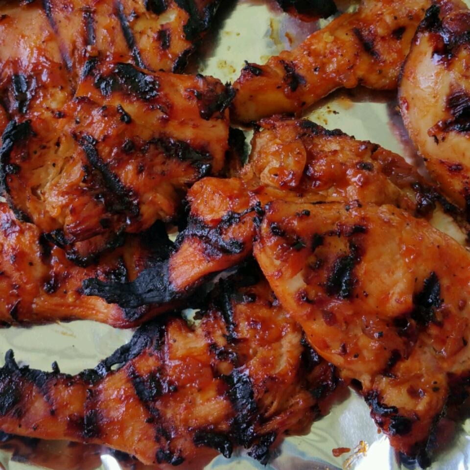

Barbecue Chicken

Description
A not-too-sweet, not-too-tangy barbecue sauce that everyone loves. Finishes in almost a glaze and would also be great on pork chops or ribs.
Ingredients
- 1 ½ tablespoons olive oil
- ¼ cup diced onion
- 2 cloves garlic, minced
- 5 tablespoons ketchup
- 3 tablespoons honey
- 3 tablespoons brown sugar
- 2 tablespoons apple cider vinegar
- 1 tablespoon Worcestershire sauce
- salt and pepper to taste
- 2 skinless, boneless chicken breast halves
Steps
- Preheat grill for medium-high heat.
- Heat olive oil in a skillet over medium heat. Saute onion and garlic until tender. Stir in ketchup, honey, brown sugar, apple cider vinegar, Worcestershire sauce, salt, and pepper. Cook for a few minutes to thicken sauce. Remove from heat, and allow to cool.
- Lightly oil the grill grate. Dip chicken in sauce, and turn to coat. Cook on grill for 10 to 15 minutes, turning once. Move chicken to the skillet with sauce. Simmer over medium heat for about 5 minutes on each side.
Nutrition Facts
Per Serving: 452 calories; protein 25.7g; carbohydrates 60.1g; fat 13.1g; cholesterol 67.2mg; sodium 714.1mg.